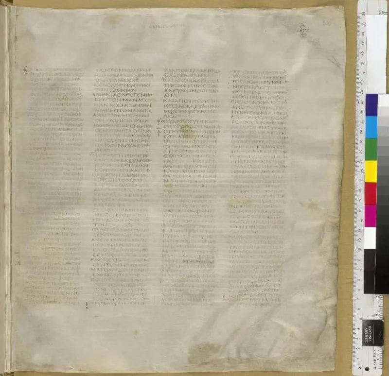
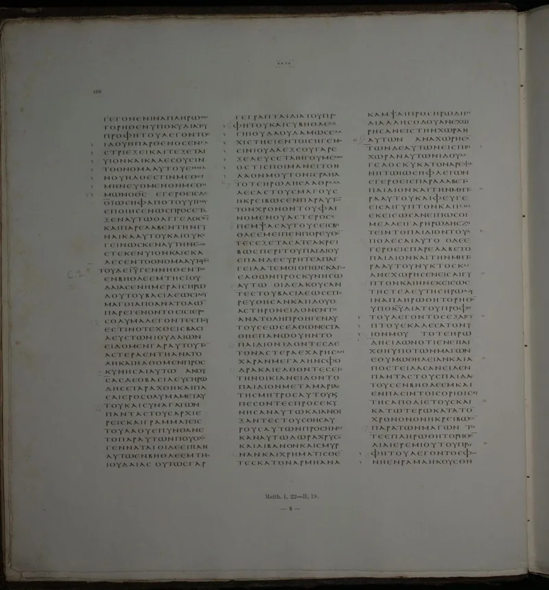
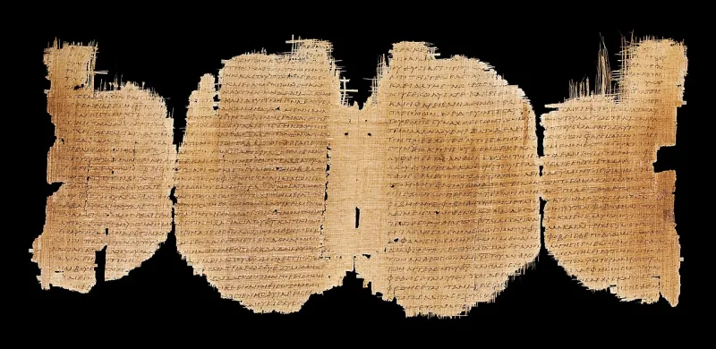

Skeptical scholars grant this themselves. Argue it from their sources, not yours.
The New Testament survives in about 5,800 Greek manuscripts. Add tens of thousands more in early translations.
One scrap, P52, is within decades of when John was written. Compare the Annals of Tacitus: about 20 substantial copies, made a thousand years after he wrote.
There are more than 400,000 differences between the copies. That is more variants than there are words in the New Testament, as Bart Ehrman says on tour.
Here is why the number is so big. More copies means more countable differences.
Nearly all are spelling, word order and obvious slips. Two long passages are genuinely disputed: Mark 16:9-20 and John 7:53-8:11.
Every modern Bible brackets them with a note. That is transparency, not a cover-up.
In the paperback appendix of Misquoting Jesus, Ehrman wrote that his position "does not actually stand at odds with Prof. Metzger's position that the essential Christian beliefs are not affected by textual variants in the manuscript tradition of the New Testament." Quote it fairly.
It is his own book.
His serious point survives that concession. Plentiful late copies do not fix the earliest years.
The flood of manuscripts begins in the third century. The first 150 years are nearly a blank, and that is when amateurs copied and the text moved most.
Some variants do carry weight. Mark 1:41 has an angry or a compassionate Jesus.
Luke has the bloody sweat. The endings differ.
And "no doctrine affected" partly reflects that doctrines were framed later, from the text that survived. Deeper still, "the original" is fuzzy if a book circulated in editions.
Granted, and by the field's most famous skeptic in print. But never quote raw counts without the context.
Most of those copies are medieval, and variants scale with copies. Someone who knows the field will spring that trap.
Concede the early gap. What stands is this.
We know what the authors wrote, to within trivial margins. Not that we hold photocopies.
"Most of those 400,000 differences are spelling. I'll show you the two that actually matter."



Late copies cannot fix the first 150 years, and that is when the text moved most.
Ehrman's serious point survives his concession. Plentiful late manuscripts do not fix the earliest period. Our flood of copies begins in the third century. The first 150 years or so are nearly a black box. That is exactly when amateurs did the copying, the text was most fluid, and the weightiest changes could happen.
Some variants do matter for doctrine: the angry against the compassionate Jesus of Mark 1:41, Luke's bloody sweat, the endings with a doxology. And 'no cardinal doctrine affected' partly reflects the fact that doctrines were later formed from the text that survived.
Deeper still, 'the original text' is itself a fuzzy target if books circulated in editions. We have excellent access to the second-century text. The autographs remain an inference.
Conceded, and Ehrman grants it in print, but never quote raw copy counts.
Conceded. The advantage in attestation is a plain fact of bibliography. And the point that no essential doctrine hangs on a variant is granted by the field's most famous skeptic, in print.
Never quote raw manuscript counts without the honest context. Most are medieval, and variants scale with copies. A skeptic who knows the field will spring that trap otherwise. Concede the gap in the early period. What survives is this. We know what the New Testament authors wrote, to within trivial margins. Not that we hold photocopies of the autographs.